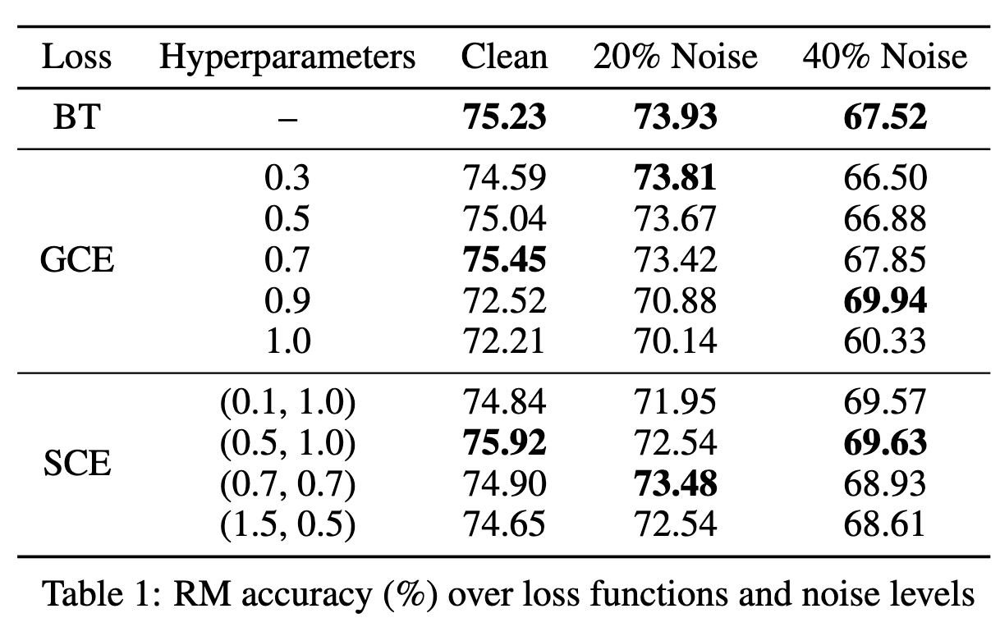
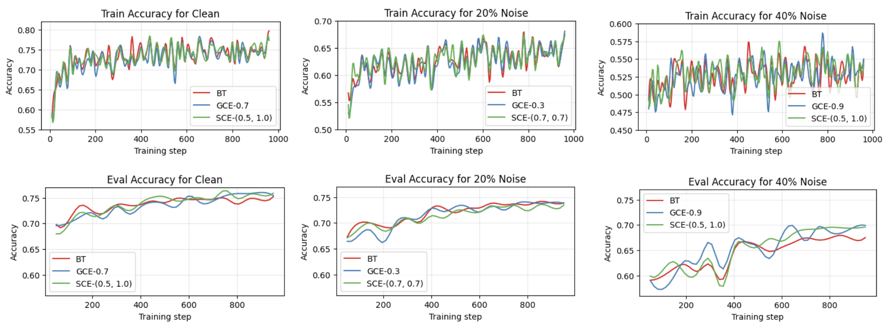
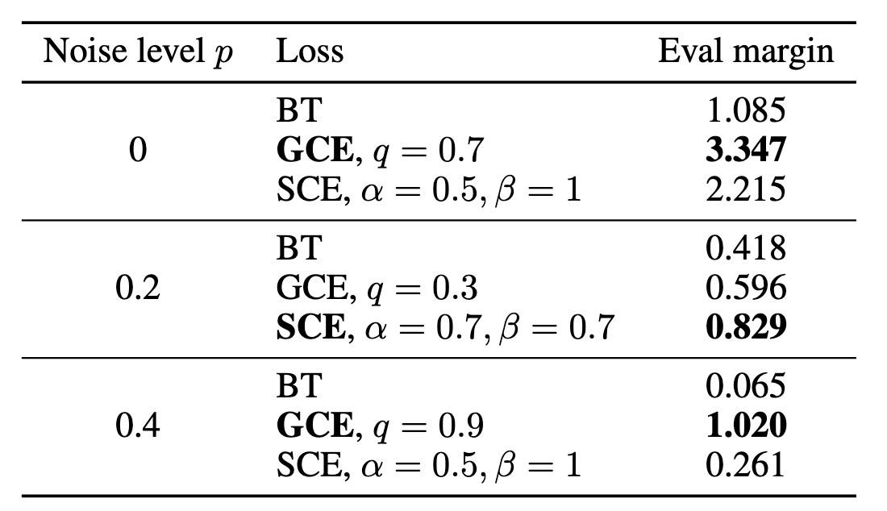

| Robust Reward Modeling Under Noisy Preferences | |||
| Katherine Liang | Iris Xu | ||
| Final project for 6.7960, MIT | |||
Discussion
Reward Model Training Results
Our standalone reward model experiments demonstrate how robust losses behave under increasing label noise. As the noise level increases, all losses result in a drop in test accuracy on the clean UltraFeedback data. However, the rate of degradation differs across the different loss functions. For each noise level, we analyze the results considering the best hyperparameters for GCE and SCE below.
Clean data. When training on clean data ($p=0$), all three losses achieve very similar performance: BT at 75.23%, GCE at 75.45%, and SCE at 75.92% accuracy. Interestingly, this suggests that using GCE and SCE can match BT performance on clean data if the hyperparameters are chosen carefully.
Moderate noise. Under moderate noise ($p=0.2$), the BT baseline remains surprisingly competitive. Its accuracy drops to 73.93%, GCE drops to 73.81%, and SCE drops to 73.48%. These differences in accuracy are again very small, and may only be attributed to variance in training and evaluation. Nonetheless, at this noise level, BT loss actually achieves the best test accuracy. This suggests that for reasonably high-quality preference data, with noise on the order of 20%, the three losses are quite comparable. Simply training a BT reward model is still quite effective, and the benefits of swapping in a robust loss like GCE or SCE are limited.
High noise. Finally, under the highest noise setting ($p=0.4$), the benefits of the robust losses become apparent. The BT baseline degrades the fastest, while GCE and SCE result in a slower drop in performance. Specifically, BT accuracy falls to 67.52%, while GCE retains 69.94% accuracy, and SCE achieves 69.63%. So, at high noise levels, the robust losses recover up to around $2.5$ percentage points of accuracy over BT, indicating that they can extract a non-trivial amount of signal that BT loss fails to exploit. In the next section, we further run downstream policy optimization using these models to examine if this performance gap affects the policy meaningfully.
GRPO Results
We next evaluate whether improvements in reward model robustness translate into better downstream policies under GRPO. Using the setup described in Methods, we compare two policies that trained on the noisiest data ($p=0.4$): one fine-tuned with a reward model trained using the baseline BT loss, and another fine-tuned with a reward model trained using GCE with $q=0.9$. The rewards and GRPO objective during training are shown below.

Our results show that the GCE-0.9-based policy substantially outperforms the BT-based policy. The GCE-0.9 policy is preferred by the LM judge on 707/1,024 UltraChat prompts (69.04%) and on 542/750 Arena-Hard-Auto prompts (72.26%). For both datasets, the GCE robust‑loss policy wins more than twice as often as the baseline. This gap is far larger than would be expected from random variation, suggesting that the choice of loss for reward modeling can have a significant downstream impact on GRPO under noisy preference data.
On UltraChat, these results shows that a more noise-robust reward model yields substantially better behavior on the training domain. On Arena-Hard-Auto, the high win rate suggests that this performance extends to difficult, real-world questions and creative writing, as opposed to overfitting to the GRPO training data. Together with the standalone reward‑model results, these findings suggest that even relatively modest gains in reward robustness can lead to substantial improvements in alignment quality.
We hypothesize that this improvement can be attributed to both the higher RM accuracy, as well as potentially greater reward margins by the robust loss functions. Specifically, in addition to gaining 2.5% in eval accuracy, the GCE-0.9 reward model outputted reward scores that were significantly more spread out than that of the BT reward model. We calculate the evaluation margin of the best reward models at each setting to confirm this, which is the average difference between the reward given on the preferred response and the rejected response over the evaluation set. We report these metrics below over all noise levels and loss functions at the best hyperparameters. We observe that GCE and SCE consistently output higher reward margin.
Table 1. Reward model accuracy (%) over loss functions and noise levels.
Figure 1. Train and eval curves for best reward models. Note that GCE/SCE only diverges meaningfully from BT at 40% noise.
Figure 2. Train reward and objective curves during GRPO training.
Table 2. Evaluation margin for the best models.